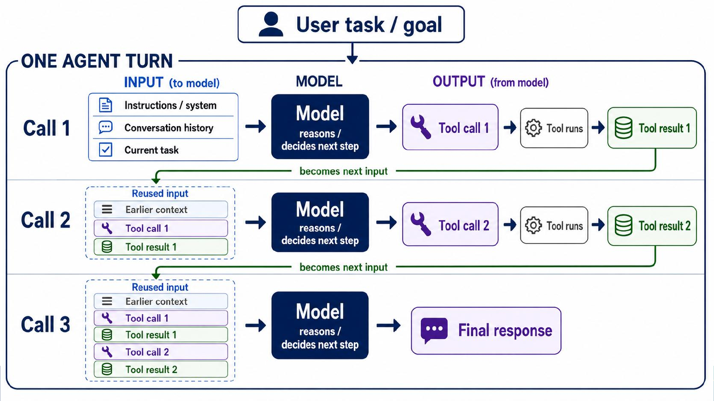
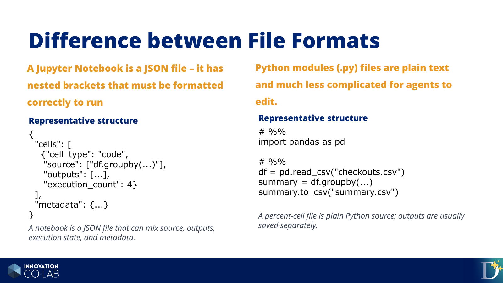
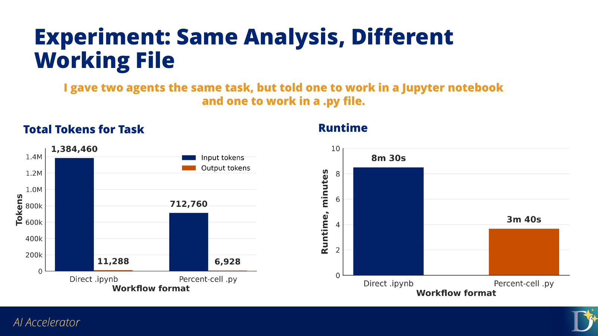
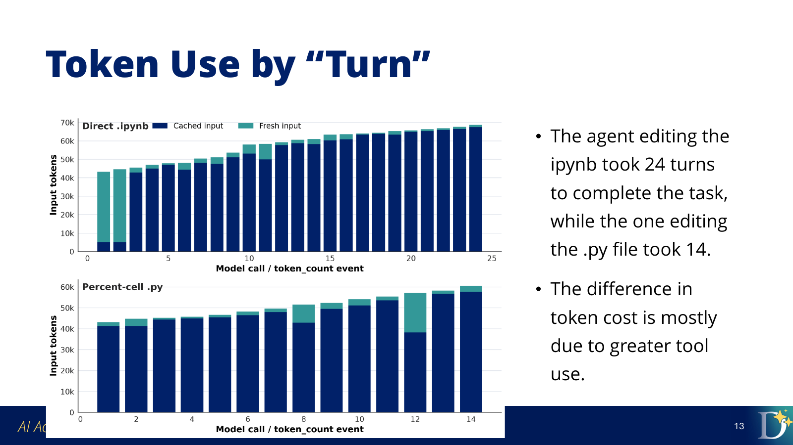

Context Management Part 2: Choose a Working File Format
Session 1 used a notebook because notebooks are a familiar interface for many analysts and learners. They make it easy to see code, outputs, and short explanations together while learning the agent-assisted workflow.
Session 2 shifts from the notebook as a familiar learning interface to the working file as part of context management. When Antigravity performs repeated analysis work, the file format affects what the agent must read, edit, validate, execute, and inspect.
Objectives
explain why working file format affects agent tool use
distinguish notebook and percent-cell Python files as agent working artifacts
interpret token usage with attention to model calls, fresh input, and tool results
choose an appropriate working artifact for agent-assisted analysis
This may be easy to believe intuitively. A notebook looks more complex than a Python script, and an .ipynb file contains more than source code. The mechanism matters because Antigravity does not only read the file once. During a task, it may inspect the file, edit it, run it, inspect outputs, repair errors, and use those tool results as context for later model calls.
Central Claim
The working artifact is part of context management because it changes the tool work Antigravity must do. More tool work can mean more model calls, more fresh input, more cumulative context, and more runtime.
Start With One Agent Turn
To see why file format can affect token usage, first identify the unit of work being repeated. A single user request can require several model calls and tool calls before the final response. Each model call receives context, decides a next step, and may ask a tool to inspect, edit, run, or validate something in the project.
An agent turn is more than a chat message. The model receives input, decides the next step, may call tools, receives tool results, and may repeat that loop before answering.


One user request can produce several model calls. Tool results from one call can become input to the next call.
This matters because the working file is one of the objects the tools operate on. A file format that requires more inspection, validation, or output extraction can create more tool work during the same analysis task.
Why File Format Changes Tool Use
A Jupyter notebook is stored as JSON rather than as a simple script. An .ipynb file can contain code, markdown, outputs, execution counts, widget state, metadata, and nested structure that must remain valid.
A percent-cell .py file is plain Python text with cell markers. VS Code’s Jupyter extension can treat the markers as cells, while the file remains easy to edit as source code.


A notebook mixes source, outputs, execution state, and metadata. A percent-cell Python file keeps the working source as plain text.
A notebook may require the agent to do extra tool work:
preserve valid JSON structure
add or update cells without corrupting the file
execute the notebook
inspect saved cell outputs
decide which outputs matter
remove or avoid stale outputs
validate notebook structure after edits
A .py file gives the agent a simpler source artifact:
# %%
from pathlib import Path
import pandas as pd
checkout_totals = pd.read_csv("data/combined_checkout_totals_by_month_usageclass.csv")
# %%
complete_years = checkout_totals[checkout_totals["checkout_year"].between(2006, 2025)]
annual_totals = (
complete_years
.groupby(["checkout_year", "usageclass"], as_index=False)["total_checkouts"]
.sum()
)
# %%
Path("outputs").mkdir(exist_ok=True)
annual_totals.to_csv("outputs/annual_checkout_totals.csv", index=False)
The aggregate starts partway through 2005 and ends partway through 2026. This example uses 2006 through 2025 for complete-year totals and creates the output folder before saving the CSV.
The # %% markers preserve a cell-like workflow, but the agent is editing ordinary Python text. Outputs can be saved separately as CSV files, images, markdown summaries, or dashboard-ready extracts.
How Extra Tool Work Becomes Extra Context
The file-format difference matters because tool results can become later input. If an agent validates notebook JSON, extracts cell output, receives an execution error, or inspects a generated artifact, that result can become part of the working context for the next model call.
More tool work can therefore mean:
more model calls
more command output and tool results
more fresh input
more cumulative context
more chances to inspect the same information repeatedly
For context management, prompt length is only one part of the problem. The working artifact also determines how much tool work the agent must perform.
Why Token Type Matters
Token usage is not a single kind of activity. Some tokens are material the model reads, some are material the model writes, and some input tokens are repeated context that the system can cache. These distinctions matter because agent workflows often differ in how much new file content, command output, tool result text, and conversation history they add over time.
A token is a small piece of text or data the model reads or writes. When reviewing agent usage, separate these categories:
Input tokens: what the model receives, including instructions, conversation history, file contents, command output, errors, and tool results.
Output tokens: what the model generates, including explanations, code, edits, and final responses.
Cached input: repeated context the system recognizes and can reuse, such as stable instructions or earlier conversation context.
Fresh input: new context added on a turn, such as changed files, fresh command output, new errors, or newly inspected results.
Cached input is still context, but it is less expensive than fresh input. Fresh input is especially important for understanding workflow friction because it often reflects new material the agent had to inspect: a changed file, a notebook output, an error message, or a tool result.
A File-Format Experiment
The following example compares notebook and percent-cell Python workflows for the same analysis task. It illustrates how the working file format can affect tool use, token usage, and runtime.
In this comparison, agents performed similar Seattle Public Library checkout analyses. The analysis question was the same: compare physical and digital borrowing trends over time. The main difference was the working artifact:
one workflow used an
.ipynbnotebookone workflow used a percent-cell
.pyfile
The controlled comparison is the easiest part to interpret. Two agents were given the same data, the same analysis question, and similar deliverable requirements. The intended difference was the durable working source:
Workflow |
Total tokens |
Fresh input |
Model calls |
Runtime |
|---|---|---|---|---|
Direct |
1,395,748 |
129,036 |
24 |
8m 30s |
Percent-cell |
719,688 |
51,000 |
14 |
3m 40s |


In the controlled comparison, the notebook workflow used more total tokens and took longer.
The exact multiplier is less important than the mechanism:
The notebook workflow required more model calls and more tool work. That extra work accumulated more context.
The tool-call categories showed the source of the difference. The direct notebook workflow included notebook-specific work such as structure validation and output extraction. The percent-cell workflow still required execution and output inspection, but it avoided much of the notebook-specific handling.


The notebook workflow took more model calls. Each call is another chance for context, tool output, and file state to enter the next step.
A less constrained agent-native comparison was noisier, but it pointed in the same direction: the notebook path again used more total tokens, more model calls, and more runtime. That consistency is why the recommendation is practical even though the exact multiplier is not universal.
More detail
For the complete charts, tool-call categories, cache notes, and starting prompts, see the full file-format evaluation report.
What This Means For Your Work
For the rest of this course, the destination is a dashboard or shareable analysis artifact. That changes the default working pattern.
Working Recommendation
For agent-heavy analysis, prefer a plain .py file or a percent-cell .py file as the working artifact. Use notebooks only when notebook-style teaching, presentation, or review is part of the task.
Update the project rules for Python source
The rules you wrote in Session 1 require notebook analysis. Update them for the working format described here before continuing:
Update AGENTS.md in the Session 1 project so accepted analysis can use plain or percent-cell Python source files, with generated CSVs, figures, checks, and short explanations saved in the project. Replace the notebook-only requirements where they conflict with this workflow. Keep the rules about readable code, source-data protection, explicit transformations, checking row meaning, and traceable results. Keep the Session 1 notebook as a record of that session. Show me the revised rules.Review the rules and start a new conversation in this project before testing the next task.
Use a .py or percent-cell .py file when:
Antigravity will iterate through several edit-run-inspect cycles.
You expect to create dashboard-ready data extracts.
You want cleaner diffs and easier review.
You want outputs saved as separate files.
You do not need notebook-style explanation beside every cell.
Use a notebook intentionally when:
the notebook itself is the teaching or review artifact
you need rich inline display while presenting
collaborators expect to read the analysis as a notebook
the value of notebook presentation outweighs the extra agent workflow cost
The goal is to choose a working artifact that matches the job, so the agent spends its effort on analysis rather than artifact maintenance.
Practical Rule
Use Python source while Antigravity is iterating on the analysis. Use a notebook or report when the analysis needs to be read as a narrative artifact.
Key points
File format is part of context management.
Notebooks can require extra structure validation and output inspection.
Extra tool work can increase model calls, fresh input, runtime, and total tokens.
For agent-heavy analysis in this course, prefer
.pyor percent-cell.pyas the working artifact.Use notebooks when the notebook format is part of the task.